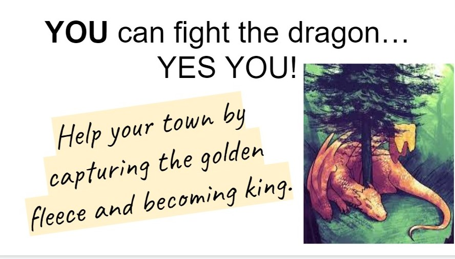

-
Women get exiled from all areas around her
October 28, 2022 | Posted by Marisa Poff & Shae Chirunbolo-McKee | Filed under books, death, fear
Medea gets exiled from her hometown, her ex-husband's hometown and now Corinth. She is forced to take her children with her.
Corinth Updates
Corinth Updates
Medea likes to plan revenge on others in a deathly way. She is known for killing people to get what she wants and to get out of trouble. She got kicked out of her hometown for killing her brother. She was helping her husband collect the golden fleece so he can be the king. When they get back to his hometown, Iolcus, Jason does not become king. Medea has the king's daughter kill the king. Medea gets in trouble for this and gets her and her husband kicked out. They go to Corinth, and have 2 sons. When she finds out her husband is going to marry the princess of Corinth, she gets upset at him and they get into an argument. The king, Creon, is now scared of Medea and wants her out of his town immediately.

When we talked to Creon he stated, “Medea, sour-faced, glowering with rage against your husband: hear this. I order you now to leave this land and go into exile, with immediate effect.” (lines 18) He wants her gone and into exile immediately. By kicking her out he hopes no more killing will happen. He also does not want to endanger his city.